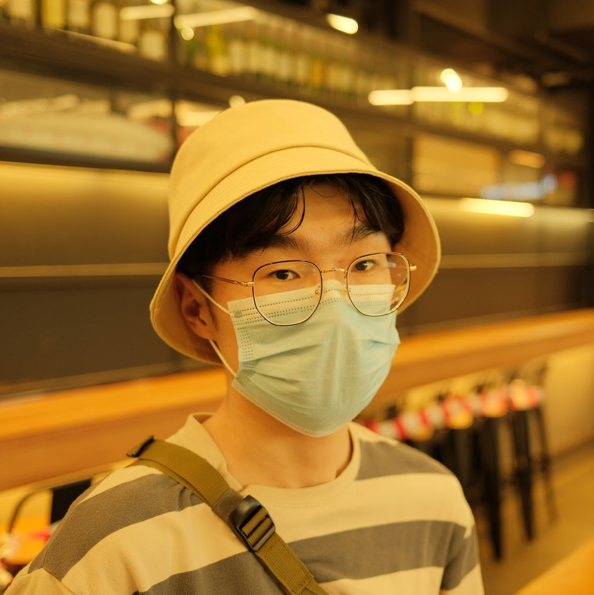

|  | Jieke SHI(史 杰克) |
Conference Click here to show/hide
[12] Chen Gong, Zhou Yang, Yunpeng Bai, Jieke Shi, Arunesh Sinha, Bowen Xu, David Lo, Xinwen Hou, and Guoliang Fan, "Curiosity-Driven and Victim-Aware Adversarial Policies." 2022 39th Annual Computer Security Applications Conference (ACSAC). (15 pages, Technical Paper.) [PDF] [Code]
[11] Jieke Shi, Zhou Yang, Bowen Xu, Hong Jin Kang, and David Lo. "Compressing Pre-trained Models of Code into 3 MB." 2022 IEEE/ACM 37th International Conference on Automated Software Engineering (ASE). (12 pages, Research Paper.) [PDF] [Code]
[10] Chengran Yang, Bowen Xu, Ferdian Thung, Yucen Shi, Ting Zhang, Zhou Yang, Xin Zhou, Jieke Shi, Junda He, DongGyun Han, and David Lo. "Answer Summarization for Technical Queries: Benchmark and New Approach." 2022 IEEE/ACM 37th International Conference on Automated Software Engineering (ASE). (12 pages, Research Paper.) [PDF] [Code]
[9] Zhou Yang, Jieke Shi, Muhammad Hilmi Asyrofi, and David Lo. "Revisiting Neuron Coverage Metrics and Quality of Deep Neural Networks." 2022 IEEE 29th International Conference on Software Analysis, Evolution and Reengineering (SANER). (12 pages, RENE Track.) [PDF][Code][Video]
[8] Ratnadira Widyasari, Stefanus Agus Haryono, Ferdian Thung, Jieke Shi, Constance Tan, Fiona Wee, Jack Phan, and David Lo. "On the Influence of Biases in Bug Localization: Evaluation and Benchmark." 2022 IEEE 29th International Conference on Software Analysis, Evolution and Reengineering (SANER). (11 pages, RENE Track.) [PDF][Code] [Dataset][Video]
[7] Jieke Shi, Zhou Yang, Junda He, Bowen Xu, and David Lo. "Can Identifier Splitting Improve Open-Vocabulary Language Model of Code?" 2022 IEEE 29th International Conference on Software Analysis, Evolution and Reengineering (SANER). (5 pages, ERA Track.) [PDF][Poster][Code][Video]
[6] Zhou Yang, Jieke Shi, Junda He, and David Lo. "Natural Attack for Pre-trained Models of Code." 2022 IEEE/ACM 44th International Conference on Software Engineering (ICSE). (12 pages, Technical Track.) [PDF][Code]
[5] Zhou Yang, Harshit Jain, Jieke Shi, Muhammad Hilmi Asyrofi, and David Lo. "BiasHeal: On-the-Fly Black-Box Healing of Bias in Sentiment Analysis Systems." 2021 IEEE 37th International Conference on Software Maintenance and Evolution (ICSME). (5 pages, NIER Track.) [PDF][Code]
[4] Muhammad Hilmi Asyrofi, Zhou Yang, Jieke Shi, Chu Wei Quan, and David Lo. "Can Differential Testing Improve Automatic Speech Recognition Systems?" 2021 IEEE 37th International Conference on Software Maintenance and Evolution (ICSME). (5 pages, NIER Track.) [PDF][Code]
[3] Zhou Yang*, Jieke Shi*, Shaowei Wang, and David Lo. "IncBL: Incremental Bug Localization." 2021 IEEE/ACM 36th International Conference on Automated Software Engineering (ASE). (4 pages, Tool Demonstrations, *Equal contributions.) [PDF][Poster][Code][Video]
[2] Jieke Shi, Zhou Yang, and Junwu Zhu. "An Auction-Based Task Allocation Algorithm in Heterogeneous Multi-Robot System." 2020 EAI 2nd International Conference on Robotic Sensor Networks (ROSENET). (8 pages, Main Track.) [PDF]
[1] Jieke Shi, Junwu Zhu, Jian Li, Fang Liu and Yunbo Lv. "An Efficient Double Auction Mechanism for Job Allocation." 2019 IEEE 23rd international conference on computer supported cooperative work in design (CSCWD). (6 pages, Main Track.) [PDF]
Journal Click here to show/hide
[4] Yi Jiang, Jinjin Wang, Jieke Shi, Junwu Zhu, and Ling Teng. "Network-aware virtual machine migration based on gene aggregation genetic algorithm." Mobile Networks and Applications (2020): 1-12. [PDF]
[3] Junwu Zhu, Jieke Shi, Zhou Yang, and Bin Li. "A real-time decentralized algorithm for task scheduling in multi-agent system with continuous damage." Applied Soft Computing 83 (2019): 105628. [PDF]
[2] Junwu Zhu, Ling Teng, Huimin Lu, Jieke Shi, and Bin Li. "Ontology negotiation: Knowledge interchange between distributed ontologies through agent negotiation." Concurrency and Computation: Practice and Experience 33, no. 15 (2021): e5406. [PDF]
[1] Jieke Shi, Zhou Yang, and Junwu Zhu. "An auction-based rescue task allocation approach for heterogeneous multi-robot system." Multimedia Tools and Applications 79, no. 21 (2020): 14529-14538. [PDF]
Preprint Click here to show/hide
[1] Chen Gong, Zhou Yang, Yunpeng Bai, Junda He, Jieke Shi, Arunesh Sinha, Bowen Xu, Xinwen Hou, Guoliang Fan, and David Lo. "Mind Your Data! Hiding Backdoors in Offline Reinforcement Learning Datasets." [PDF]
Reviewer:
Membership:
© Jieke SHI | Last Update: Nov 2022